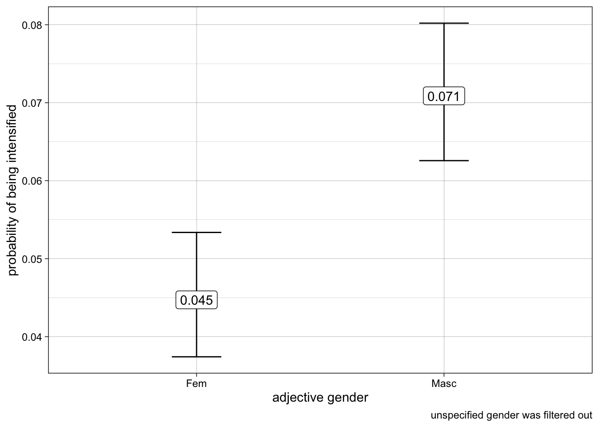

# load library
library(tidyverse)Analyzing intensifying constructions found in tweets in R: frequencies, collocations, and variation across groups
Minicurso for PREDICAR 2022
Tweet Data
We will be working with processed tweet data in this minicurso. The last 3,200 tweets from four Brazilian Twitter accounts were retrieved using the package rtweet. The tweets were then automatically labeled for part of speech using spacyr – for more information using the available Portuguese pipelines which are based on a converted version of the Bosque, which is part of the Floresta Sintá(c)tica treebank. All adjectives that allow for an intensifier were extracted from these tweets automatically, with some post-processing to eliminate false positives. That is to say that there’s noise in the data since these tokens were not coded by humans. This data is used to the purpose of this demonstration, not as valid findings regarding the use of intensifiers in Portuguese.
For the purposes of this demonstration, intensifiers include the following adverbs: bastante, bem, demais, mais, menos, muito, pouco, quanto, quão, quase, tanto, tão.
Here’s a super token:
Mas prometo que o próximo (que já é certo, já tenho o show pra gravar) eu quero no Teatro Amazonas, e quero mostrar ele como ele é, bem lindo e entupido!
The tagger did not identify entupido as an adjective. The token próximo was tagged as adjective, but eliminated from the data since it cannot be modified by an intensifier.
For an example of an actual research paper on intensification in Portuguese, refer to Lívio and Hower (2020).
Data Exploration
We will be working with the tidyverse library for all of our data wrangling and visualization.
As mentioned, the data has been retrieved from twitter, annotated, cleaned, and saved to a tab separated file.
# read data in
intense_data <- read_tsv("data/intensifiers_tweets.tsv")Rows: 6098 Columns: 15
── Column specification ────────────────────────────────────────────────────────
Delimiter: "\t"
chr (11): doc_id, token, lemma, pos, tag, gender, number, dep_rel, intensifi...
dbl (4): sentence_id, token_id, head_token_id, intensifier
ℹ Use `spec()` to retrieve the full column specification for this data.
ℹ Specify the column types or set `show_col_types = FALSE` to quiet this message.# inspect data
glimpse(intense_data)Rows: 6,098
Columns: 15
$ doc_id <chr> "text838", "text2537", "text1708", "text1914", "text…
$ sentence_id <dbl> 4, 2, 2, 1, 3, 1, 1, 3, 1, 1, 1, 1, 2, 1, 2, 1, 6, 1…
$ token_id <dbl> 20, 3, 9, 8, 15, 4, 23, 23, 11, 8, 8, 7, 16, 12, 6, …
$ token <chr> "vista", "triste", "toscos", "sucedidas", "relax", "…
$ lemma <chr> "visto", "triste", "tosco", "sucedido", "relax", "rá…
$ pos <chr> "ADJ", "ADJ", "ADJ", "ADJ", "ADJ", "ADJ", "ADJ", "AD…
$ tag <chr> "ADJ", "ADJ", "ADJ", "ADJ", "ADJ", "ADJ", "ADJ", "AD…
$ gender <chr> "Masc", "Masc", "Masc", "Fem", "Masc", "Masc", "Masc…
$ number <chr> "Sing", "Sing", "Plur", "Plur", "Sing", "Sing", "Sin…
$ head_token_id <dbl> 3, 1, 10, 1, 11, 1, 21, 17, 21, 5, 5, 7, 9, 10, 2, 2…
$ dep_rel <chr> "acl:relcl", "xcomp", "amod", "acl:relcl", "conj", "…
$ intensifier_lemma <chr> "bem", "bem", "bem", "bem", "bem", "bem", "bem", "be…
$ intensifier <dbl> 1, 1, 1, 1, 1, 1, 1, 1, 1, 1, 1, 1, 1, 1, 1, 1, 1, 1…
$ text <chr> "Ser respeitada. Para proteger o direito dos artista…
$ account <chr> "anitta", "whindersson", "anitta", "oglobo", "anitta…The accounts chosen for this minicurso are anitta, whindersson, oglobo, g1. Our response variable is the presence of an intensifier modifying the adjective, which is a binary variable with 0 being no intensifier modifying the adjective and 1 indicating the presence of an intensifier.
Since our response variable is a binary discrete numeric variable, we can calculate its mean by Twitter account to get to the percentage of adjectives that are modified by an intensifier.
# get percent of intensification per twitter account
intense_data %>%
group_by(account) %>%
summarize(percent_intensified = mean(intensifier),
tokens = n(),
intensifiers = tokens * percent_intensified) %>%
arrange(percent_intensified) %>%
mutate(percent_intensified = format(percent_intensified, digits = 2))# A tibble: 4 × 4
account percent_intensified tokens intensifiers
<chr> <chr> <int> <dbl>
1 oglobo 0.042 1790 75
2 g1 0.048 2096 101
3 anitta 0.083 817 68
4 whindersson 0.103 1395 144Collocations
From the adjectives that are intensified, what are the intensifiers used by twitter account?
We will start by filtering the data to keep only adjectives that are intensified. We will then calculate how many of each intensifier we have per twitter account. Totals and percentages are then calculated.
# intensifier
intense_data %>%
filter(intensifier == 1) %>%
group_by(account, intensifier_lemma) %>%
summarize(n = n()) %>%
mutate(total = sum(n),
percent = n/total)# A tibble: 38 × 5
# Groups: account [4]
account intensifier_lemma n total percent
<chr> <chr> <int> <int> <dbl>
1 anitta bem 9 68 0.132
2 anitta demais 1 68 0.0147
3 anitta mais 16 68 0.235
4 anitta muito 26 68 0.382
5 anitta pouco 1 68 0.0147
6 anitta realmente 1 68 0.0147
7 anitta super 4 68 0.0588
8 anitta tão 10 68 0.147
9 g1 bem 3 101 0.0297
10 g1 demais 1 101 0.00990
# … with 28 more rowsThis summarization of the data will be visualized better in a plot. We need the tidytext library for our ordering of the bars in our bar plots.
library(tidytext)
intense_data %>%
filter(intensifier == 1) %>%
group_by(account, intensifier_lemma) %>%
summarize(n = n()) %>%
mutate(total = sum(n),
percent = n/total) %>%
ggplot(aes(x = percent,
y = reorder_within(intensifier_lemma, percent, account))) +
geom_col() +
facet_wrap(~account, scale = "free_y") +
scale_y_reordered() +
theme_linedraw() +
labs(y = "intensifier lemma")We can also look at most common adjectives that are intensified versus the most common adjectives that are not intensified.
intense_data %>%
group_by(intensifier, lemma) %>%
summarize(n = n()) %>%
slice_max(n = 10, order_by = n) %>%
ggplot(aes(x = n,
y = reorder_within(lemma, n, intensifier))) +
geom_col() +
facet_wrap(~intensifier, scales = "free") +
scale_y_reordered() +
theme_linedraw() +
labs(y = "")For the most common adjectives, how frequently are they intensified?
intense_data %>%
group_by(lemma) %>%
summarize(n = n(),
percent_intensified = mean(intensifier)) %>%
slice_max(n = 10, order_by = n) %>%
ggplot(aes(x = percent_intensified,
y = reorder(lemma, percent_intensified),
label = format(percent_intensified, digits = 2))) +
geom_col() +
geom_label() +
theme_linedraw() +
labs(y = "",
x = "percentage intensified",
title = "Frequency of intensificaiton of most common adjectives in the corpus")Linear Regression
We’ve been calculating frequencies up to this point. The question is whether differences of frequencies across groups is actually significant. For that, we need to run some type of statistical test. In this minicurso, we will run linear and logistic regression.
Let’s start with linear regression – we will use the lm function with intensifier as our dependent/response variable, with the following predictors: twitter account, adjective gender, and adjective number. Our question is as follows: what is the effect of twitter account, adjective gender, and adjective number on intensification?
model_1 <- lm(intensifier ~ account + gender + number,
data = intense_data)
summary(model_1)
Call:
lm(formula = intensifier ~ account + gender + number, data = intense_data)
Residuals:
Min 1Q Median 3Q Max
-0.14524 -0.08346 -0.05948 -0.03278 0.97374
Coefficients:
Estimate Std. Error t value Pr(>|t|)
(Intercept) 0.074216 0.011329 6.551 6.18e-11 ***
accountg1 -0.033989 0.010060 -3.379 0.000733 ***
accountoglobo -0.040507 0.010268 -3.945 8.07e-05 ***
accountwhindersson 0.016687 0.010721 1.556 0.119660
genderMasc 0.026704 0.006351 4.205 2.65e-05 ***
genderUnsp 0.061786 0.091967 0.672 0.501722
numberSing -0.007447 0.007816 -0.953 0.340691
---
Signif. codes: 0 '***' 0.001 '**' 0.01 '*' 0.05 '.' 0.1 ' ' 1
Residual standard error: 0.2426 on 6091 degrees of freedom
Multiple R-squared: 0.01358, Adjusted R-squared: 0.01261
F-statistic: 13.98 on 6 and 6091 DF, p-value: 7.302e-16The best way to visualize results in by plotting the effects of different predictors (a.k.a. factor groups) on intensification. We will use the effects library for this.
We will start with the effect of twitter account on intensification. The plot displays the percent intensification of adjectives across the four twitter accounts, with the error bars showing the 95% confidence intervals calculated from the standard error retrieved from the model.
library(effects)Loading required package: carDatalattice theme set by effectsTheme()
See ?effectsTheme for details.effect("account", model_1) %>%
data.frame() %>%
ggplot(aes(x = reorder(account, fit),
y = fit,
ymin = lower,
ymax = upper,
label = format(fit, digits = 2))) +
geom_errorbar() +
geom_label() +
theme_linedraw() +
labs(y = "percent of intensification",
x = "twitter account",
title = "The effect of twitter account on adjective intensification")Let’s do the same with the adjective gender.
effect("gender", model_1) %>%
data.frame() %>%
ggplot(aes(x = reorder(gender, fit),
y = fit,
ymin = lower,
ymax = upper,
label = format(fit, digits = 2))) +
geom_errorbar() +
geom_label() +
theme_linedraw() +
labs(y = "percent of intensification",
x = "adjective gender",
title = "The effect of adjective gender intensification")Logistic Regression
Another option for us is to run logistic regression instead. This is a straight-forward process since our response variable is already binary.
We will use the glm() funciton instead, with binomial for the family parameter. Everything else remains de same.
model_2 <- glm(intensifier ~ account + gender + number,
family = "binomial",
data = intense_data)
summary(model_2)
Call:
glm(formula = intensifier ~ account + gender + number, family = "binomial",
data = intense_data)
Deviance Residuals:
Min 1Q Median 3Q Max
-0.5616 -0.3893 -0.3415 -0.2697 2.6371
Coefficients:
Estimate Std. Error z value Pr(>|z|)
(Intercept) -2.5805 0.1851 -13.942 < 2e-16 ***
accountg1 -0.5706 0.1641 -3.477 0.000507 ***
accountoglobo -0.7206 0.1739 -4.143 3.42e-05 ***
accountwhindersson 0.1835 0.1551 1.183 0.236827
genderMasc 0.4884 0.1153 4.236 2.28e-05 ***
genderUnsp 0.7748 1.0870 0.713 0.475958
numberSing -0.1448 0.1355 -1.069 0.285182
---
Signif. codes: 0 '***' 0.001 '**' 0.01 '*' 0.05 '.' 0.1 ' ' 1
(Dispersion parameter for binomial family taken to be 1)
Null deviance: 2888.4 on 6097 degrees of freedom
Residual deviance: 2807.7 on 6091 degrees of freedom
AIC: 2821.7
Number of Fisher Scoring iterations: 6Note that the coefficient estimates for logistic regression is not at the same unit of measure as the original response variable. The output shows log odds instead, which is harder to interpreter.
We can still use effect to visualize effects, and the estimates are converted from log odds to probabilities for us.
We will look at the effect of twitter account on intensification first.
effect("account", model_2) %>%
data.frame() %>%
ggplot(aes(x = reorder(account, fit),
y = fit,
ymin = lower,
ymax = upper,
label = format(fit, digits = 2))) +
geom_errorbar(width = .2) +
geom_label() +
labs(y = "probability of being intensified",
x = "twitter account",
caption = "error bars display 95% confidence intervals") +
theme_linedraw()Let’s do the effect of adjective gender on intensification next.
effect("gender", model_2) %>%
data.frame() %>%
filter(gender != "Unsp") %>%
ggplot(aes(x = reorder(gender, fit),
y = fit,
ymin = lower,
ymax = upper,
label = format(fit, digits = 2))) +
geom_errorbar(width = .2) +
geom_label() +
labs(y = "probability of being intensified",
x = "adjective gender",
caption = "unspecified gender was filtered out") +
theme_linedraw()
And finally, adjective number effect on intensification.
effect("number", model_2) %>%
data.frame() %>%
ggplot(aes(x = reorder(number, fit),
y = fit,
ymin = lower,
ymax = upper,
label = format(fit, digits = 2))) +
geom_errorbar() +
geom_label() +
labs(y = "probability of being intensified",
x = "adjective gender") +
theme_linedraw()